Index of 2019
We are
- 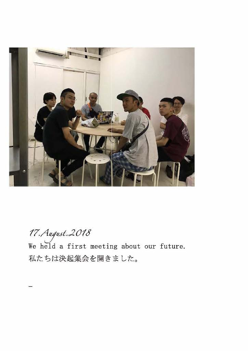Hello
- 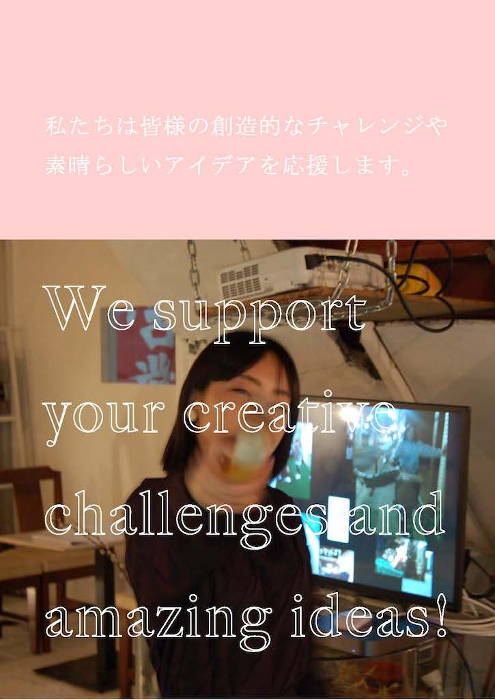私たちの目標
- 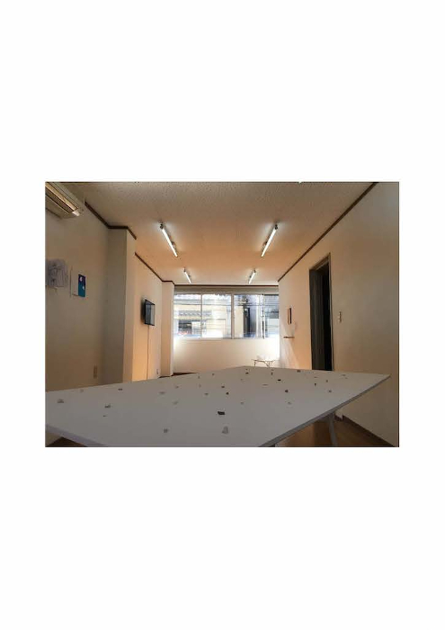TWS1
- 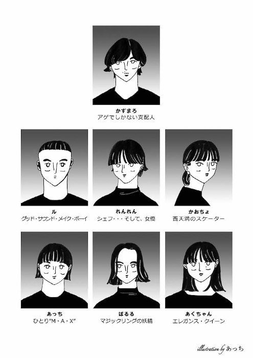Menu
- 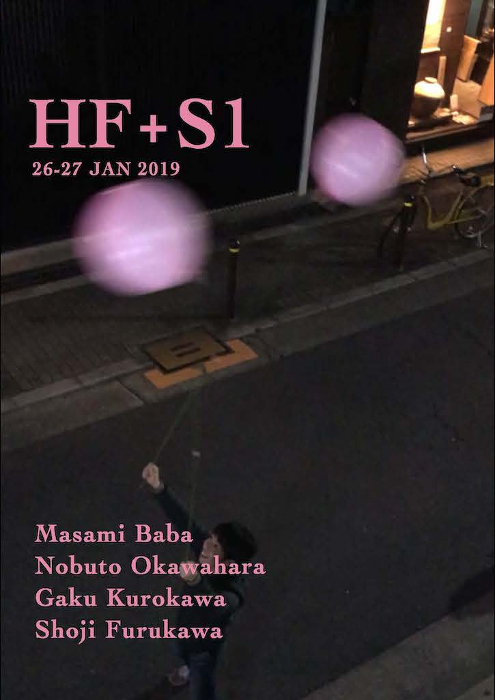HF+S1
- 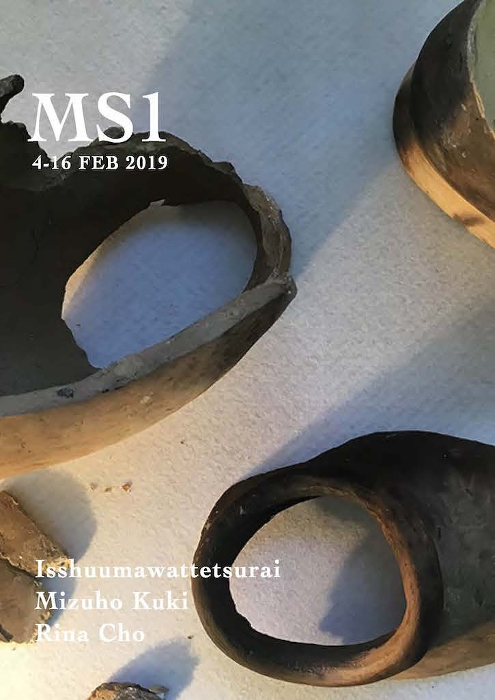MS1
Hello
こんにちは・Archive of 2017-2018
2018年12月1日発行 会員限定月刊デジタルマガジン創刊号より
私たちの目標
大世界・壁を壊す・Our Goal
We want to support your creative challenges and amaizing ideas!
TWS1
by Fumio Kohama, Stefan Alexander, Shintaro Matsuo
展覧会
TWS1
の記録 | ステファンへの手紙 by Ray Washio
Menu
ペフ喫茶の写真とメニュー
Special Home-made delicious foods and drinks for you, our friends.
HF+S1
by Masami Baba, Shoji Funakawa, Nobuto Okawahara, Gaku Kurokawa
ばばまさみ・船川翔司・大川原暢人・黒川岳
による展覧会
HF+S1
の解説・感想
MS1
by Isshuumawattetsurai, Mizuho Kuki, Rina Cho
展覧会
MS1
の記録写真
6 PDFs / Total 115 pages
ズッ友
- 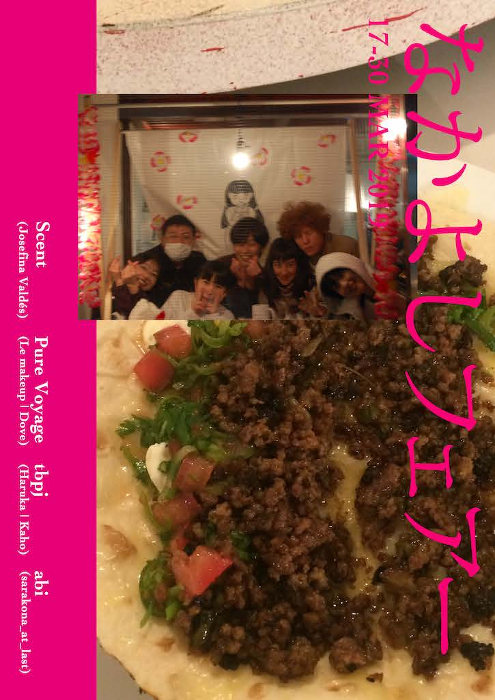 なかよしフェアー
- 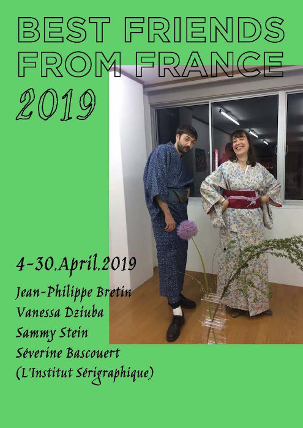 Best Friends from France
- 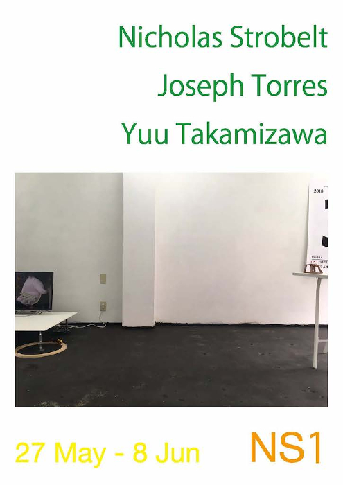 NS1
- 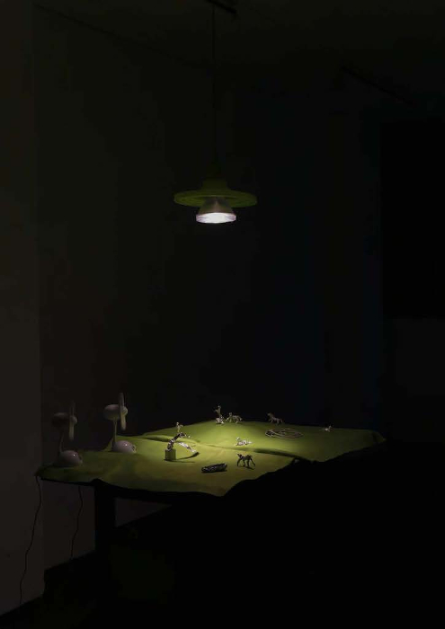 Green People
- 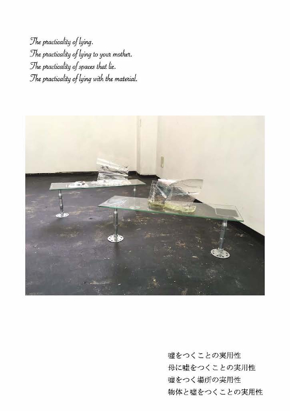 Tongue finishes back at the root of itself
- 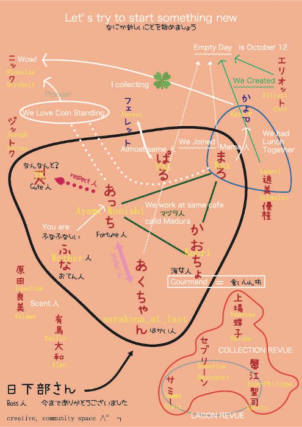 西天満のペフ
More Info
なかよしフェアー
by Scent (Josefina Valdés) with Pure Voyage (Le makeup, Dove), tbpj (Haruka, Kaho), abi (sarakona_at_last)
西天満のペフ 2F ショップスペース
Beauty Spot
の記録 |
ホセとエミについて | 美人 [BEAST]
Best Friends from France
by Jean-Philippe Bretin, Vanessa Dziuba, Sammy Stein, Séverine Bascouert (L'Institut Sérigraphique)
Jean-Philippe Bretin, Vanessa Dziuba
による展覧会
Signed Curtain
と
Sammy Stein, Séverine Bascouert (L'Institut Sérigraphique)
による展覧会
フランスのカード
の記録 | 日仏の友情 100%の友達 新しい冒険への道
NS1
by Nicholas Strobelt, Joseph Torres, Yuu Takamizawa
展覧会
NS1
の記録 | K by 爆破片非安全製造団 | Friendly Foam Shop Osaka Branch | Coins
Green People
by Laurel Schwulst, Elliott Cost
展覧会
Green People
の記録 | この部屋での時間のつぶし方 version 0.2 | またね など
Tongue finishes back at the root of itself
by Ferran Pla, Ana Martinez Fernandez
展覧会
Tongue finishes back at the root of itself
の記録
西天満のペフ
2019年9月をもって西天満のペフは終了しました。
6 PDFs / Total 196 pages
Peace for Future
- 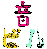
- 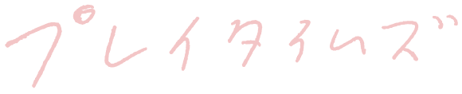
OTO building 音ビルって何？ | 創造的場づくり助成 2019 - 2021
i choose The Answers are always inside of you
プレイタイムズ a place of pray/play for us
and more
The Digital Magazine 2019 (PDF Edition) 425 Pages | 61.29 MB
レシピ
- 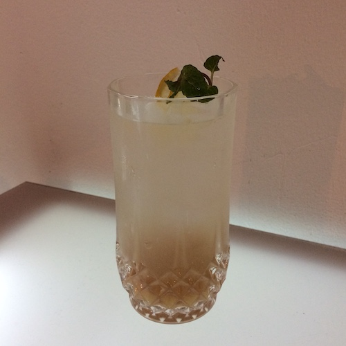 ジンジャーシロップ
 レモンシロップ
レモンシロップ- 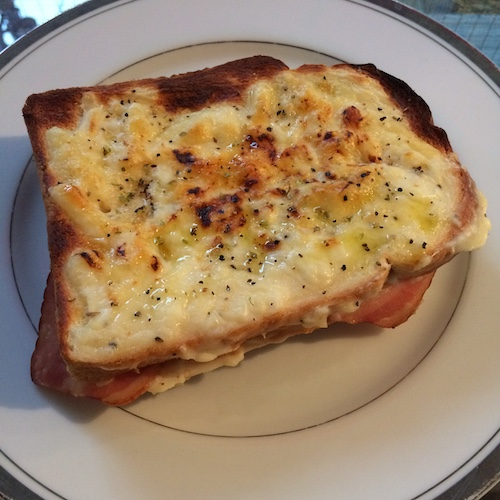 ホワイトソース
- 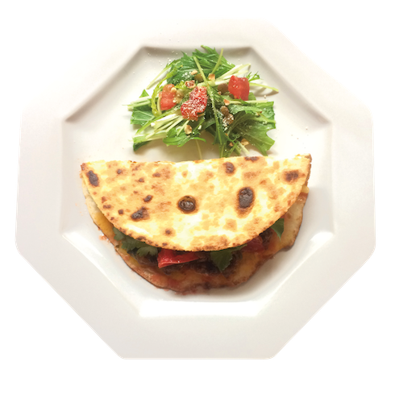 ジャパメックス・タコス
- 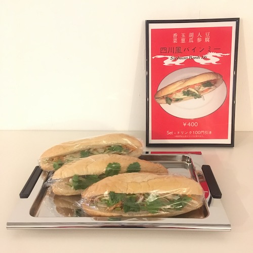 四川省風バインミーサンドウィッチ
- 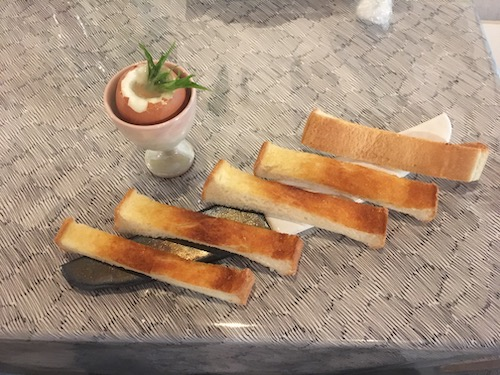 マルセイユスタイルモーニングセット
- 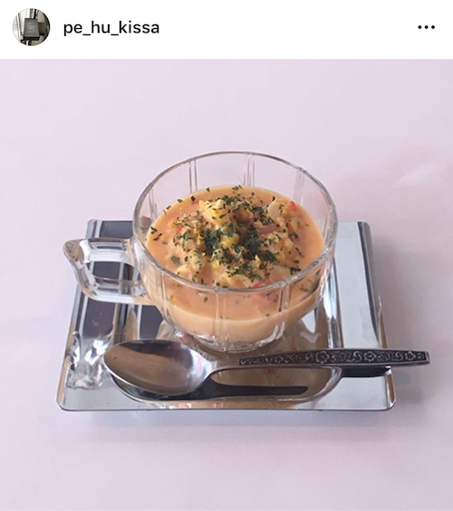 サマーコーンスープ
- 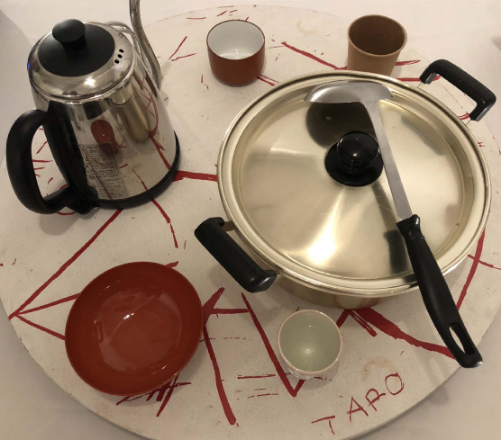 白湯
レモンシロップ
More Info
ジンジャーシロップ ・
レモンシロップ ・
ホワイトソース ・
白湯
by Dove
レンレン料理長が考えた、ペフ喫茶で提供していた料理のレシピ
ジャパメックス・タコス
by Emilio Algo, Josefina Valdés
Recipe for Japa-Mexi Tacos, which is a mixture of Japanese/Mexican food.
四川省風バインミーサンドウィッチ
by Dr. Sushi (via Bánh Mì Verlag)
This was a cool sandwich I came up with for snacks at the Pure Rave + die Reihe + Jero Route 66 + PAK + DJ
Margaret Hewitt gig on Ben Kudler's Rooftop in Brooklyn.
マルセイユスタイルモーニングセット
by Jean-Philippe Bretin, Vanessa Dziuba
Handmade Butter and Soft-boiled eggs recipe for Marseillebreakfast meal
サマーコーンスープ
by Laurel Schwulst
8 PDFs / Total 58 pages
おまけ
- Sign
- 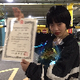 Lynx
 manga and something
manga and something- Archive of pe hu talk
 食べたもの、ほか
食べたもの、ほか- 〇〇に聞きたい50のこと
- etc.
manga and something 食べたもの、ほかSign ・ ペフの歌
- 作曲/編曲:Le makeup
- 作詞:中尾香織 | ささじまかずま
Lynx by Dove
- 作曲/編曲:Dove
- mix/mastering:Le makeup
manga and something by Ayami Konishi
Archive of pe hu talk by Masamichi Furukawa
- Age of
- GAFA
- 中国AIアナウンサーから考える今後の世界
- 2018 Best
- 千紗子と純太の謎
[Guest: BIOMAN] - ナイスショップスー
[Guest: ナイスショップスー] - お茶会トーク:ちょっと豊かになるモノ・コト/かけた曲
[Guest: seaketa | INDGMSK | thaithefish] - リアル・オーガナイザーが消える未来
2018年11月26日 - 2019年6月15日の日記
食べたもの、ほか
by ハマジ(KK manga)
新鑑真と上海 by Kaori Nakao, Kazuma Sasajima, Pal
同感覚祭 by Kazuma Sasajima, Ayumi Akutagawa, Ayami Konishi
#magicringmakefriendship by New Life Collection
今でも大切.pdf
遅くまで空いてるプール.pdf
理想の一日.pdf
SUMMER LOVE 2018.MOV
日仏の友情.mp4
More Info
〇〇に聞きたい50のこと
ペフメンバーによるペフメンバーへのインタビュー集
etc.
16 PDFs / 2 videos / 3 tracks